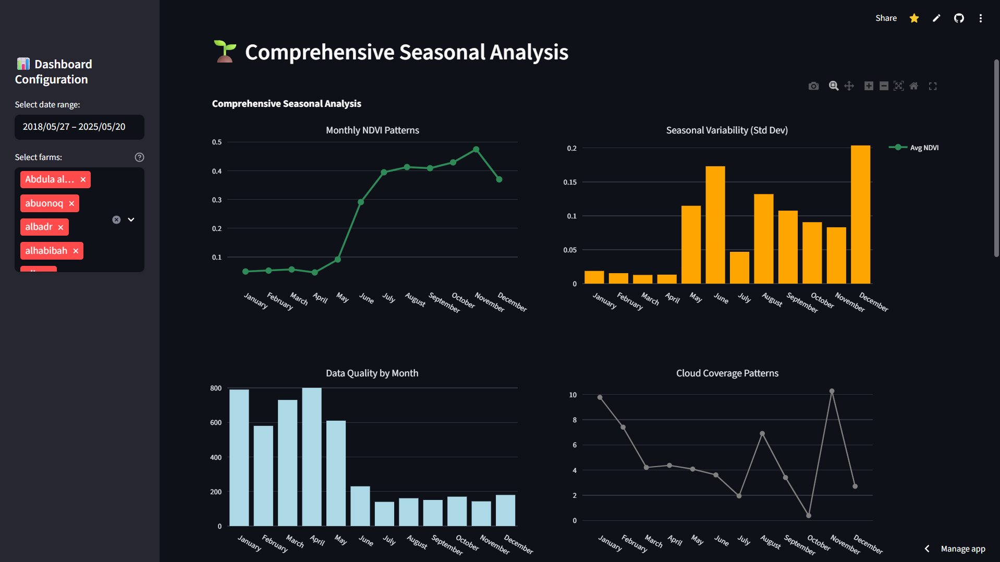
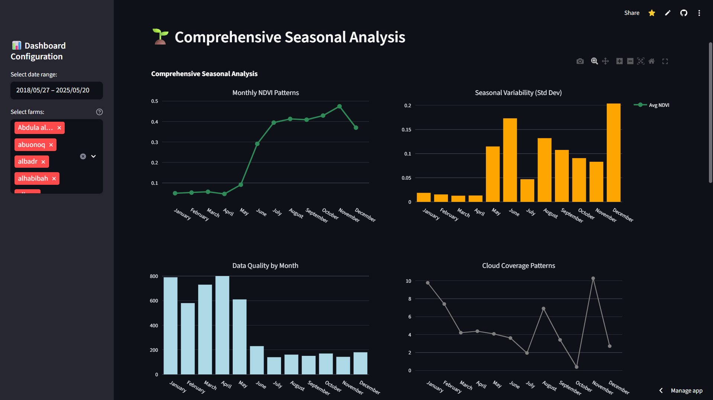

من البيانات الخام إلى رؤى قابلة للتنفيذ
نتبع عملية دقيقة من ثلاث مراحل لتحويل صور الأقمار الصناعية المعقدة إلى لوحات تحكم سهلة الفهم وقوية لاتخاذ القرارات.
المرحلة الأولى: جمع البيانات من Google Earth Engine
نبدأ بجمع بيانات صور الأقمار الصناعية عالية الدقة من Sentinel-2 عبر منصة Google Earth Engine. نقوم بتحديد كل مزرعة بدقة، ثم نسترجع البيانات التاريخية والحديثة، مع التركيز على المؤشرات النباتية الأولية التي تقيس صحة النباتات والانعكاسات الطيفية المختلفة.
المرحلة الثانية: هندسة السمات الزراعية
نحول البيانات الأولية إلى مقاييس زراعية ذات معنى. نقوم بحساب مؤشرات متعددة:
- NDVI (الصحة): مؤشر صحة النباتات العام وكثافة الغطاء النباتي.
- NDWI (الماء): يكشف عن مستويات الإجهاد المائي في النباتات.
- SAVI (التربة): يقيس صحة النبات مع تقليل تأثير التربة المحيطة.
هذه العملية تحول الأرقام المجردة إلى خريطة صحة ملونة، مما يسهل تحديد المناطق القوية والضعيفة داخل المزرعة.
المرحلة الثالثة: تدريب النماذج ونشرها
نستخدم البيانات المحولة لتدريب نموذجين رئيسيين: نموذج التجميع (K-Means): يصنف أداء المزرعة السنوي إلى فئات (ممتازة، قياسية، اقتصادية) بناءً على مقاييس الأداء الرئيسية. نموذج التنبؤ (LightGBM): يتوقع صحة المحاصيل المستقبلية (NDVI) بدقة عالية، مما يسمح بالإدارة الاستباقية واتخاذ قرارات مبكرة.
 
